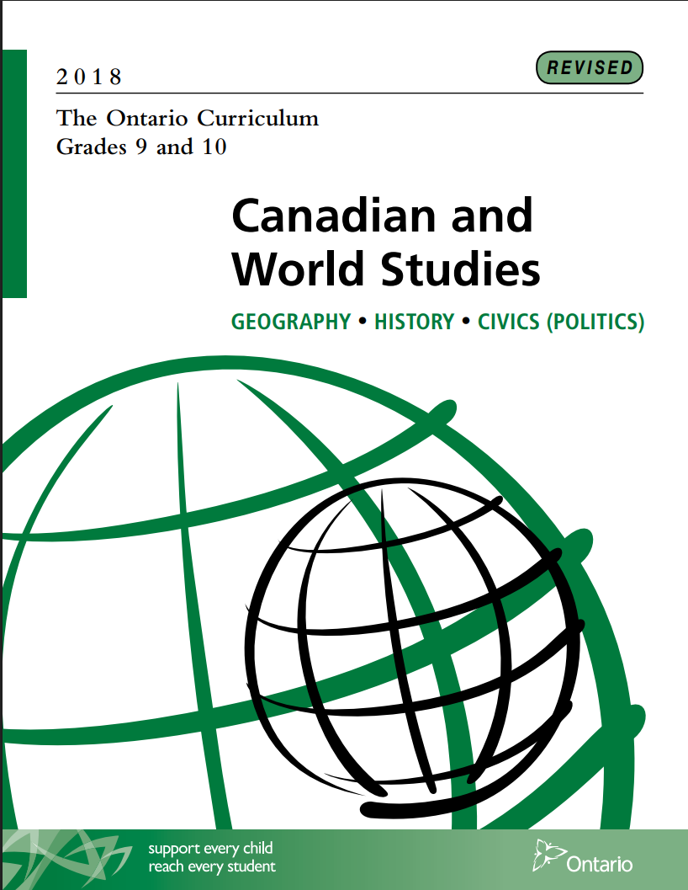

World Geography Games Online

Classroom Usage and Application
Within a Grade 9 Geography classroom, World Geography Games functions as an engaging tool for reviewing and applying concepts already introduced through formal instruction. As a game-based website, it allows students to practice physical geography concepts using strong visual supports, making it especially effective for consolidation rather than primary instruction or teaching. Through the Bloom Taxonomy, this digital tool is great for understanding and applying as students can better understand concepts through the game-like reviews that will better help them apply their learning. The website’s simple and intuitive design enables students to navigate content independently. This website is very user-friendly, making it accessible to many different learners of all skill levels. Many of the games and modules on the website support the development of spatial skills such as map reading and directional awareness. This is a direct alignment with the Geographic Inquiry and Skill Development Expectations of the Ontario Curriculum (A1, A3), as students apply geographic tools and thinking in an accessible, low-pressure environment.
Pedagogical Rationale
Digital Game-based learning (DGBL) is a persistently changing environment in the 21st century. DGBL closely aligns with constructivist theories of education, which emphasize learning as an active and experiential process, rather than passive knowledge transmission.
Research on DGBL argues that, DGBL provides learners with opportunities to actively construct knowledge through interaction, experimentation, and problem-solving, rather than passive reception of information (Abdul-Jabbar & Felicia, 2015). This aligns strongly with constructivist theories as active learning processes are a core component to the theory. Furthermore, DGBL has the potential to positively affect engagement, motivation, and learning (Brien & Wasson, 2021). By the effective ‘gamification’ of studying and studying, learners and students are able to interact with tools that foster comprehension and retention by employing engaging and entertaining mechanisms. DGBL learning reduces extraneous cognitive processing, which allows content acquisition to become far more digestible, enhancing students’ confidence in their ability to learn and succeed (Soriano, et al., 2026). The low-stakes, low-pressure nature of many DGBL websites provides opportunities for students to learn at their own pace and without fear of penalization or scrutiny.

Curriculum Connections
Grade 9 Geography places a strong emphasis on physical geography and foundational spatial concepts, including the compass rose, cardinal directions, mapping, and Earth systems such as the water cycle. These topics all utilize visual learning, which the website effectively incorporates through interactive labeling and identification activities. This supports expectations related to understanding physical processes and patterns (B1.1, B1.2). Additionally, the website’s ‘test mode’ feature encourages self-assessment and reflection, aligning with inquiry based learning expectations (A1.6, A3.4). In relation to Bloom’s Taxonomy, this is a great method for students to evaluate themselves and their understanding. Framing practice as a game also helps reduce the stigma around studying, increasing student engagement and supporting individualized review.
Different Teaching Contexts and Differentiated Learning
Many games on the website are cross-disciplinary, including topics such as the solar system, climate change, and the greenhouse effect, allowing for use in science and environmental studies as well. These topics connect to expectations that examine natural processes and human-environment interactions (B1.3, B2.1). Additionally, the website supports differentiated learning by allowing students to work at their own pace using visual explanations and key terminology. This makes the tool particularly useful for students who struggle with note-taking or processing information quickly, supporting inclusive learning practices (A.1, A1.4).
References
Abdul Jabbar, A. I., & Felicia, P. (2015). Gameplay engagement and learning in game-based learning: A systematic review. Review of Educational Research, 85(4), 740–779.
Breien, F. S., & Wasson, B. (2020). Narrative categorization in digital game-based learning: Engagement, motivation and learning. British Journal of Educational Technology, 52(1), 447–464.
Soriano-Sánchez, J. G., Quijano López, R., & Airado Rodríguez, D. (2026). The impact of game-based learning on motivation, self-efficacy, and academic achievement in the natural sciences: A meta-analysis.